- 网络共享(Samba)功能需要Root手机。各种手机Root的方法不一样，请搜索查看特定手机的Root教程。共享名称、用户名及密码均可以修改。如果修改了名称，手机重启后才能生效。
- Root以后可以使用80以及443端口。
- 如果有Root，则可以让手机网站不会受到系统电池管理的限制，保证在屏幕关闭，或者叭可软件关闭的情况下，网站的持续运行。
- 工具里面的“备份”与“还原”用于备份、还原整个软件数据。
- 如果您需要更换SSL证书，请把server.key, server.csr, server.crt放到[SD card]/ExpertWeb/php/sbin目录，重新启动网站即可生效。
- 如果您希望使用自定义的头像图标，请把图标文件放到[SD card]/ExpertWeb/icons目录，即可使用。
- 三、感谢
一、介绍
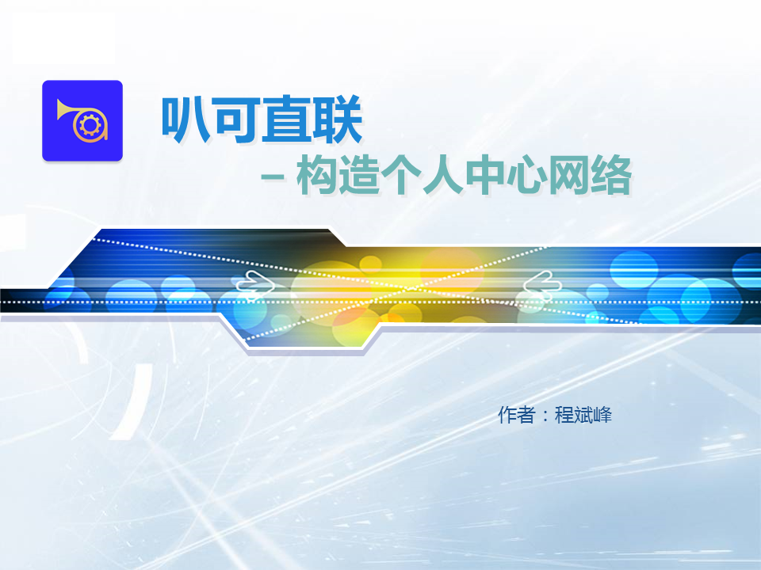 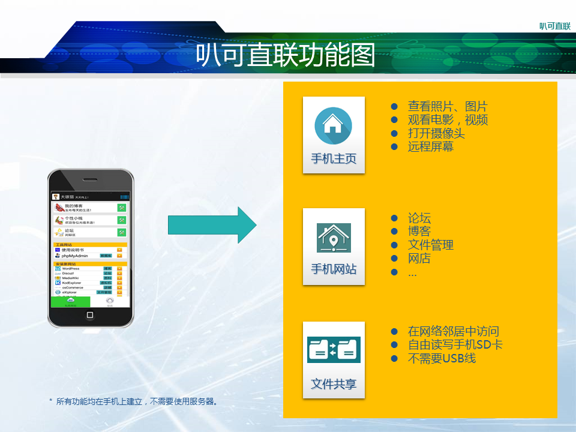 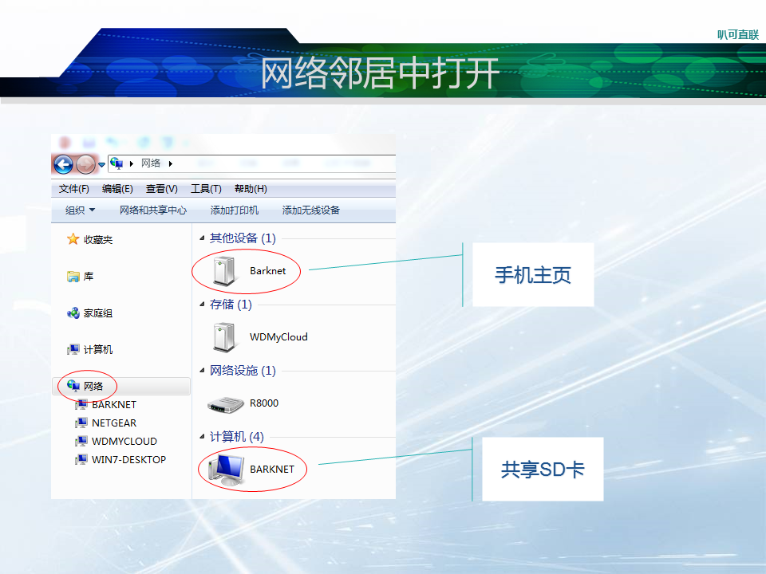 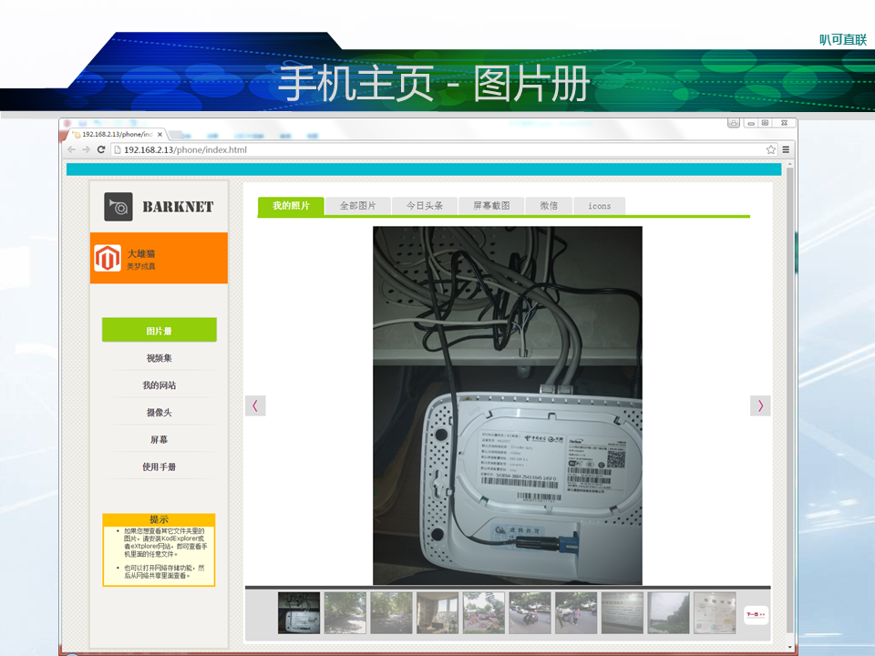 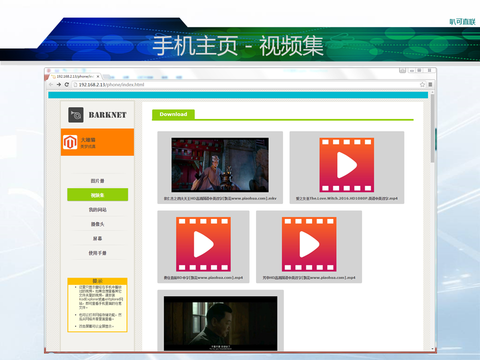 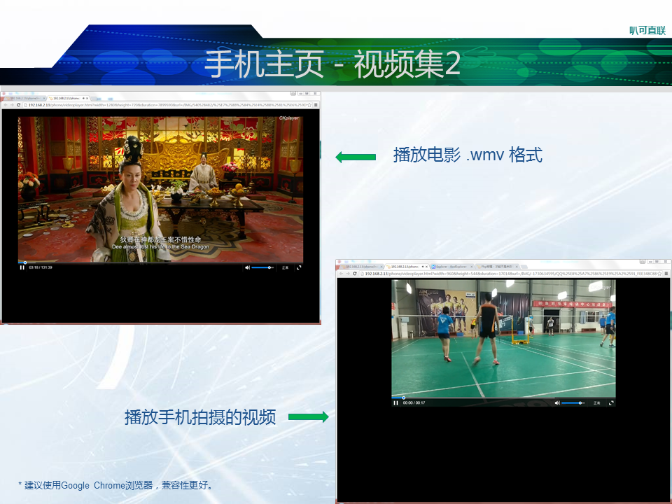 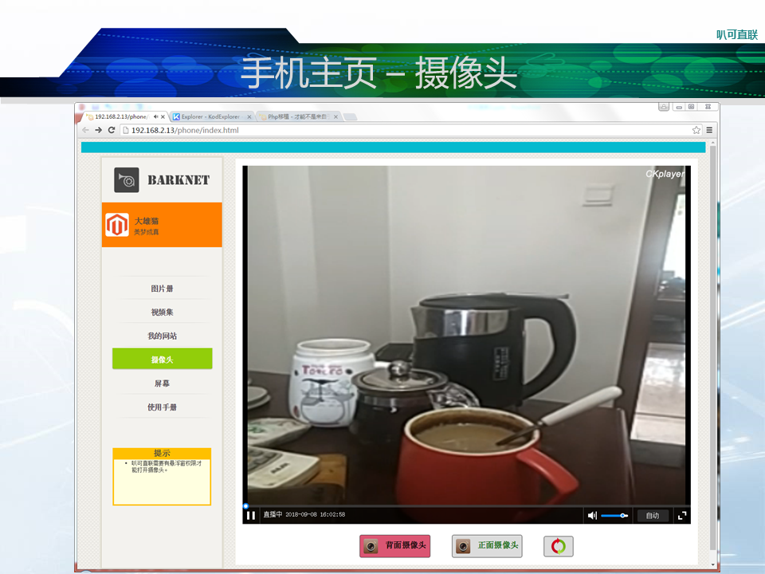 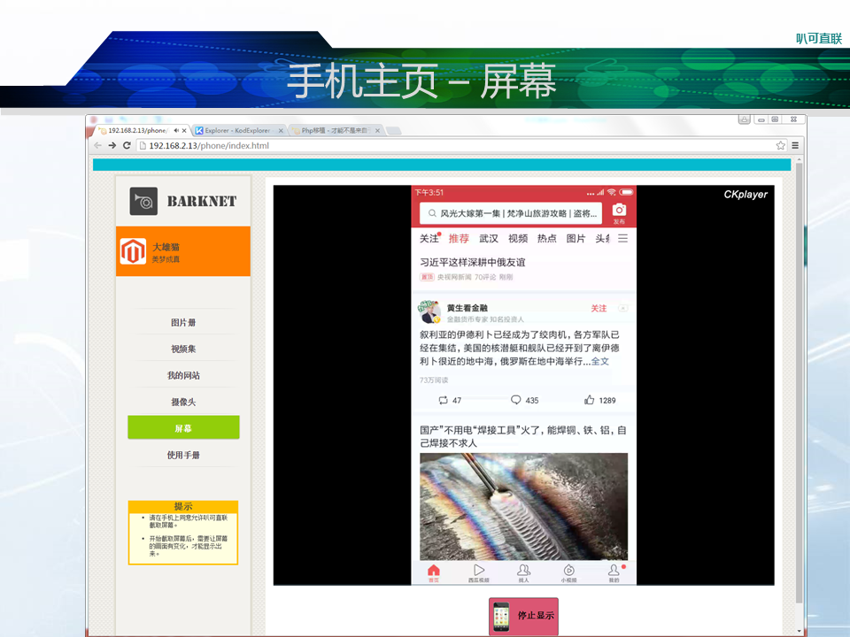 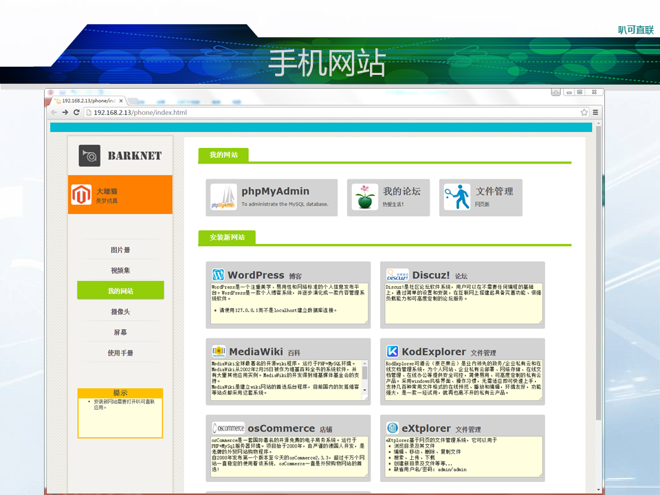 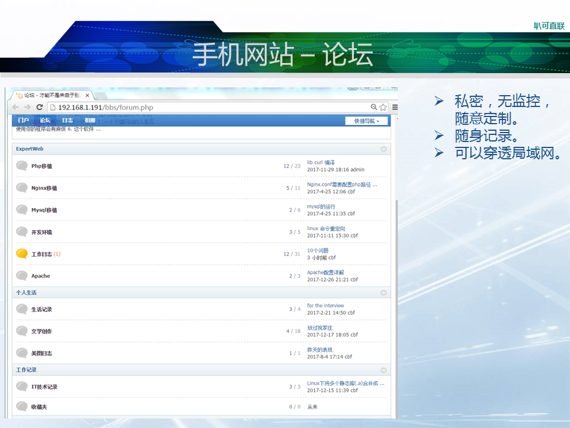 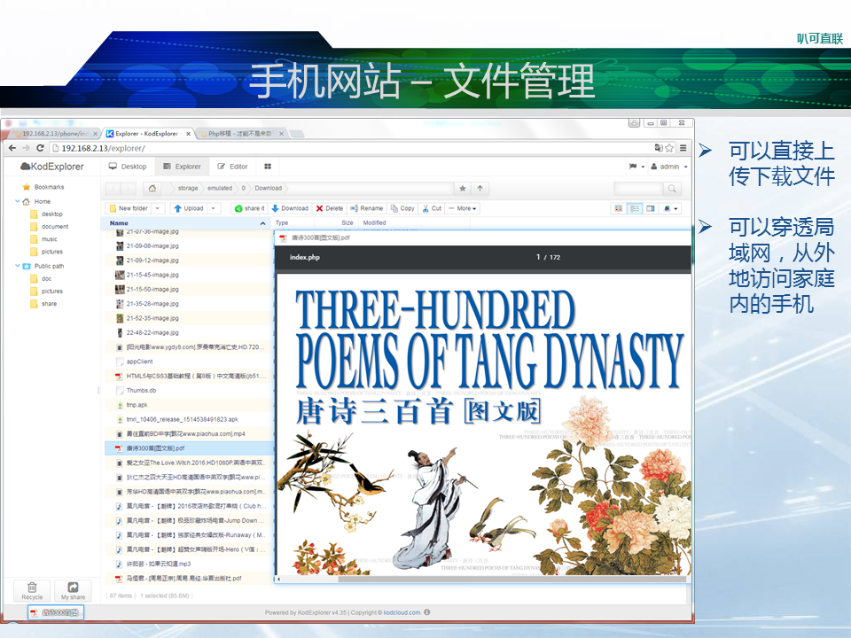 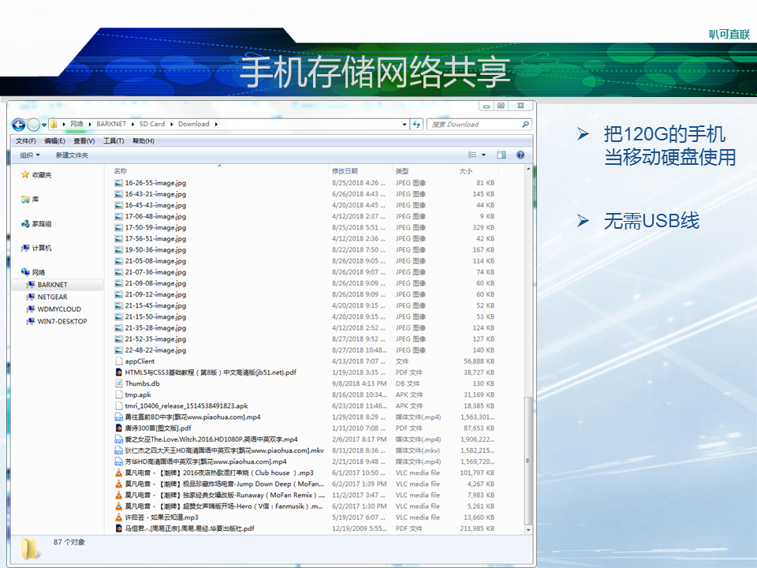二、应用信息
系统要求：
| 安卓6.0及以上。 |
| 内存4G或者更多。 |
| SD卡空间200M。 |
提供如下网站运行环境：
| Nginx: | 1.10.1 |
| Php: | 5.6.27 |
| MySql: | 5.5.21 |
| Samba: | 3.5.22 |
Mysql 管理员：
| 用户名: | root |
| 密码: | cbf |
请注意：
感谢每一位使用并关注叭可软件的朋友！
有建议请联系我：mr.cliff@163.com
欢迎您的每一个想法，感谢您的每一次关注！